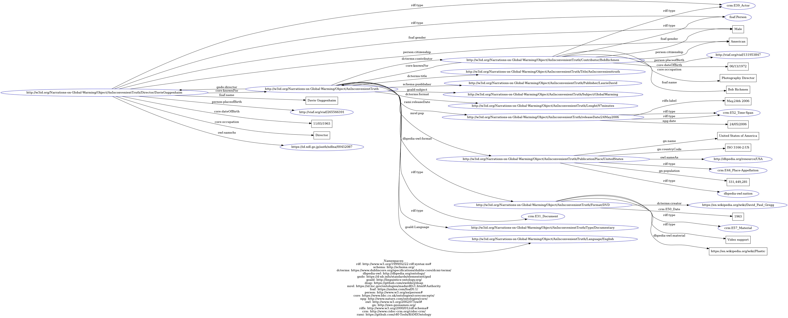

CSV Files
After completing the modelling activity, we came back to the items to describe them under the perspective of our conceptual model and chosen ontologies. We produced a table for each item where columns represent triple (subject: expressed in natural language; predicate: in the form of properties taken from the previously selected ontologies; object: expressed in natural language) and rows represent statements.
An Unconvenient Truth
| Subject | Predicate | Object |
|---|---|---|
| An Unconvenient Truth | rdf:type | Documentary |
| An Unconvenient Truth | dcterms:contributor | Bob Richmen |
| An Unconvenient Truth | dcterms:title | An Unconvenient Truth |
| An Unconvenient Truth | schema:publisher | Laurie David |
| An Unconvenient Truth | gold:subject | Global Warming |
| An Unconvenient Truth | gold:language | English |
| An Unconvenient Truth | gndo:director | Davis Guggenheim |
| An Unconvenient Truth | mrel:pup | United States |
| An Unconvenient Truth | rami:releaseDate | 2006 |
| An Unconvenient Truth | dcterms:format | 97 Minutes |
| An Unconvenient Truth | dbpedia-owl:format | DVD |
Anthropocene: The Human Epoch
| Subject | Predicate | Object |
|---|---|---|
| Anthropocene: The Human Epoch | rdf:type | Documentary |
| Anthropocene: The Human Epoch | dcterms:contributor | Nicholas De Pencier |
| Anthropocene: The Human Epoch | dcterms:title | Anthropocene: The Human Epoch |
| Anthropocene: The Human Epoch | schema:publisher | Nicholas De Pencier |
| Anthropocene: The Human Epoch | gold:subject | Global Warming |
| Anthropocene: The Human Epoch | gold:language | English |
| Anthropocene: The Human Epoch | gndo:director | Jennifer Baichwal |
| Anthropocene: The Human Epoch | mrel:pup | Canada |
| Anthropocene: The Human Epoch | rami:releaseDate | 2018 |
| Anthropocene: The Human Epoch | dcterms:format | 87 Minutes |
| Anthropocene: The Human Epoch | dbpedia-owl:format | DVD |
Snowpiercer
| Subject | Predicate | Object |
|---|---|---|
| Snowpiercer | rdf:type | Film |
| Snowpiercer | dcterms:contributor | Kelly Masterson |
| Snowpiercer | dcterms:title | Snowpiercer |
| Snowpiercer | schema:publisher | Jeong Tae-Sung |
| Snowpiercer | gold:subject | Dystopic Future |
| Snowpiercer | gold:language | English |
| Snowpiercer | gndo:director | Bong Joon-Ho |
| Snowpiercer | mrel:pup | South Korea / Czech Republic |
| Snowpiercer | rami:releaseDate | 2013 |
| Snowpiercer | dcterms:format | 126 Minutes |
| Snowpiercer/td> | dbpedia-owl:format | DVD |
Wallace Broecker
| Subject | Predicate | Object |
|---|---|---|
| Wallace Broecker | rdf:type | Person |
| Wallace Broecker | wlo:name | Wallace Broecker |
| Wallace Broecker | locah:DateBirth | 29th November 1931 |
| Wallace Broecker | person:citizenship | American |
| Wallace Broecker | Core:occupation | Scientist |
| Wallace Broecker | Igdo:GalleryShop | N/A |
| Wallace Broecker | bf:Topic | Climate Science |
Ólafur Elíasson
| Subject | Predicate | Object |
|---|---|---|
| Ólafur Elíasson | rdf:type | Person |
| Ólafur Elíasson | wlo:name | Ólafur Elíasson |
| Ólafur Elíasson | locah:DateBirth | 5th February 1967 |
| Ólafur Elíasson | person:citizenship | Icelandic |
| Ólafur Elíasson | Core:occupation | Visual Artist / Sculptor |
| Ólafur Elíasson | Igdo:GalleryShop | MoMa / Tate Museum |
| Ólafur Elíasson | bf:Topic | Contemporary Art |
Greta Thunberg
| Subject | Predicate | Object |
|---|---|---|
| Greta Thunberg | rdf:type | Person |
| Greta Thunberg | wlo:name | Greta Thunberg |
| Greta Thunberg | locah:DateBirth | 3rd January 2003 |
| Greta Thunberg | person:citizenship | Swedish |
| Greta Thunberg | Core:occupation | Climate Activist |
| Greta Thunberg | Igdo:GalleryShop | N/A |
| Greta Thunberg | bf:Topic | Secondary Studies |
Clima come evitare un disastro. Le soluzione di oggi. Le sfide di domani
| Subject | Predicate | Object |
|---|---|---|
| Clima come evitare un disastro. Le soluzione di oggi. Le sfide di domani | rdf:type | Book |
| Clima come evitare un disastro. Le soluzione di oggi. Le sfide di domani | dcterms:creator | Bill Gates |
| Clima come evitare un disastro. Le soluzione di oggi. Le sfide di domani | dcterms:title | Clima come evitare un disastro. Le soluzione di oggi. Le sfide di domani |
| Clima come evitare un disastro. Le soluzione di oggi. Le sfide di domani | schema:publisher | La Nave di Teseo |
| Clima come evitare un disastro. Le soluzione di oggi. Le sfide di domani | gold:subject | Sustainable Development/td> |
| Clima come evitare un disastro. Le soluzione di oggi. Le sfide di domani | gold:language | Italian |
| Clima come evitare un disastro. Le soluzione di oggi. Le sfide di domani | dcterms:contributor | Andrea Silvestri |
| Clima come evitare un disastro. Le soluzione di oggi. Le sfide di domani | dcterms:spatial | Milan |
| Clima come evitare un disastro. Le soluzione di oggi. Le sfide di domani | ebucore:publicationStartDayTime | 2021 |
| Clima come evitare un disastro. Le soluzione di oggi. Le sfide di domani | frbrer:3002_hasFormOfWork | Monography |
Non c'è più tempo: come reagire agli allarmi ambientali
| Subject | Predicate | Object |
|---|---|---|
| Non c'è più tempo: come reagire agli allarmi ambientali | rdf:type | Book |
| Non c'è più tempo: come reagire agli allarmi ambientali | dcterms:creator | Luca Mercalli |
| Non c'è più tempo: come reagire agli allarmi ambientali | dcterms:title | Non c'è più tempo: come reagire agli allarmi ambientali |
| Non c'è più tempo: come reagire agli allarmi ambientali | schema:publisher | Einaudi |
| Non c'è più tempo: come reagire agli allarmi ambientali | gold:subject | Natural Science / Global Warming Consequences |
| Non c'è più tempo: come reagire agli allarmi ambientali | gold:language | Italian |
| Non c'è più tempo: come reagire agli allarmi ambientali | dcterms:contributor | N/A |
| Non c'è più tempo: come reagire agli allarmi ambientali | dcterms:spatial | Turin |
| Non c'è più tempo: come reagire agli allarmi ambientali | ebucore:publicationStartDayTime | 2020 |
| Non c'è più tempo: come reagire agli allarmi ambientali | frbrer:3002_hasFormOfWork | Monography |
Being Ecological
| Subject | Predicate | Object |
|---|---|---|
| Being Ecological | rdf:type | Book |
| Being Ecological | dcterms:creator | Timothy Morton |
| Being Ecological | dcterms:title | Being Ecological |
| Being Ecological | schema:publisher | The MIT Press |
| Being Ecological | gold:subject | Ecology / Philosophy |
| Being Ecological | gold:language | English |
| Being Ecological | dcterms:contributor | N/A |
| Being Ecological | dcterms:spatial | Turin |
| Being Ecological | ebucore:publicationStartDayTime | 2018 |
| Being Ecological | frbrer:3002_hasFormOfWork | Monography |
Paris Agreement
RDF MODEL
We decided to focus on the documentary “An Unconvenient Truth” because we think that among our items is the most representative of the concept of narration on Global Warming. Indeed, this documentary was the first "mainstream" narration on the environmental and it played an important role in spreading the awareness on climate change.
Firstly, we minted a URI for each one of the entities of “An Unconvenient Truth" according to w3id.org model. Then, we wrote the RDF triples by following Turtle serialization and identifying prefixes for the adopted ontologies. Finally, we produced a graphical representation of the RDF through “RDF Grapher” (https://www.ldf.fi/service/rdf-grapher).
